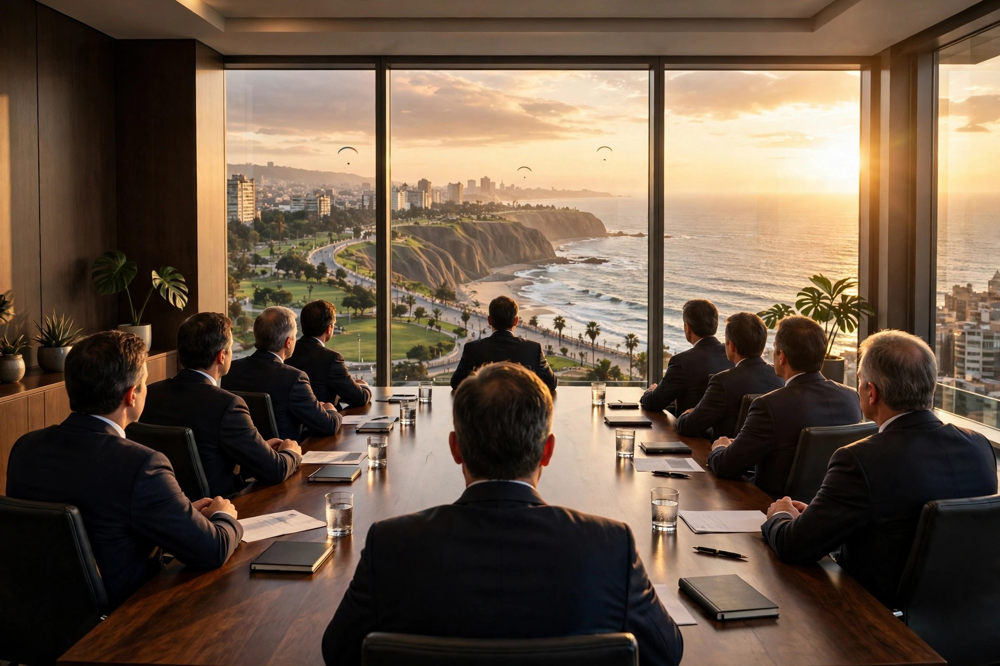

La corona del edificio: 9 miembros que vigilan a la gerencia y cuidan a 6 997 accionistas.
Fuente: Figura 1, p. 12 · §1.4.2, p. 10 · §1.3.3, p. 8 · Anexo 2, p. 40.
El organigrama es una reconstrucción del equipo consultor, no el gráfico oficial de la empresa. Los bloques de subsidiarias suman 99 % por redondeo. Datos del informe AA1 Ferreycorp (Memoria Anual 2024).